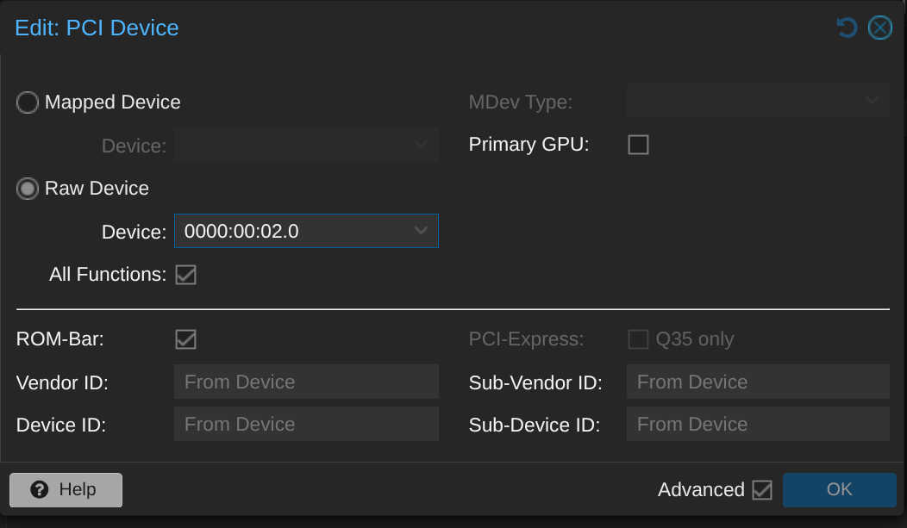

Abilitare iommu su proxmox
Dalla console di proxmox nano /etc/default/grub
e mettere in GRUB_CMDLINE_LINUX_DEFAULT, "quiet intel_iommu=on iommu=pt"
salvare le modifiche lanciando update-grub
Installare vm debian
Installare e configurare vm debian con spec: - Cores: 4 - RAM: 4GB - Storage: il NAS
Aggiungere ad hardware il PCI device affinchè la vm sfrutti la scheda grafica UHD graphics fornita dalla nostra cpu i-8500T.

Predisporre ambiente per Jellyfin
Installare pacchetti necessari: apt update && apt install cifs-utils curl wget nano -y
Creare cartella per mount: mkdir -p /mnt/jellyfin_media
Aggiungere configurazione di connessione al vecchio NAS: //10.0.20.50/Volume_1 /mnt/jellyfin_media cifs guest,vers=1.0,iocharset=utf8,_netdev 0 0
Montare il NAS: mount -a
Verificare che il NAS sia stato montato correttamente: df -h
Installare docker curl -fsSL https://get.docker.com -o get-docker.sh && sh get-docker.sh
Preparare cartelle per jellyfin mkdir -p /opt/jellyfin && cd /opt/jellyfin
Creare file di configurazione docker per sbloccare la transcodifica hardware Intel Quick Sync: nano docker-compose.yml
services:
jellyfin:
image: jellyfin/jellyfin:latest
container_name: jellyfin
network_mode: 'host'
volumes:
- ./config:/config
- ./cache:/cache
- /mnt/jellyfin_media:/media
devices:
- /dev/dri:/dev/dri
restart: 'unless-stopped'
Avviare il conteiner docker con: docker compose up -d
Accedere a Jellyfin
Accedere alla gui web tramite: ip_vm:8096